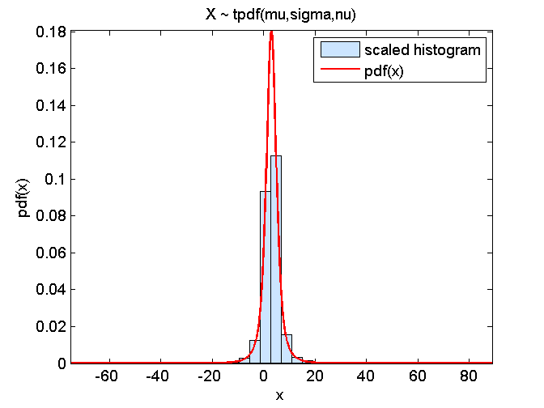

Contents
function [mu,sigma,nu,modelPdf,modelCdf,modelInv] = fit2StudentT(X,nu0)
fit2StudentT: ML fit to a Student's t distribution
SYNTAX:
[mu,sigma,nu,modelPdf,modelCdf,modelInv] = fit2StudentT(X,nu0)
INPUT:
X : Sample
nu0 : Seed for the degrees of freedomOUTPUT:
[mu,sigma,nu] : Parameters of the Student's t distribution from ML fit modelPdf : Fitted pdf modelPdf : Fitted cdf modelPdf : Fitted inv
EXAMPLE:
mu = 3;
sigma = 2;
nu = 2.5;
M = 10000;
X = mu + sigma*trnd(nu,M,1);
nu0 = 5;
[mu,sigma,nu,modelPdf,modelCdf,modelInv] = fit2StudentT(X,nu0);
figure(1); graphicalComparisonPdf(X,modelPdf)
title('X ~ tpdf(mu,sigma,nu)')Seed for mu,sigma determined from moment matching
mu0 = mean(X); % match first moment sigma0 = sqrt(var(X)*(nu0-2)/nu0); % match second moment
ML fit
[LL, mu,sigma,nu] = fit2pdf_con(X,@locationScaleTpdf,...
[mu0,sigma0,nu0],[-Inf 1e-5 1e-5], [Inf Inf Inf]);
Local minimum found that satisfies the constraints. Optimization completed because the objective function is non-decreasing in feasible directions, to within the default value of the function tolerance, and constraints are satisfied to within the default value of the constraint tolerance.
Model pdf, cdf and inv
modelPdf = @(x)(locationScaleTpdf(x,mu,sigma,nu)); modelCdf = @(x)(locationScaleTcdf(x,mu,sigma,nu)); modelInv = @(p)(locationScaleTinv(p,mu,sigma,nu));